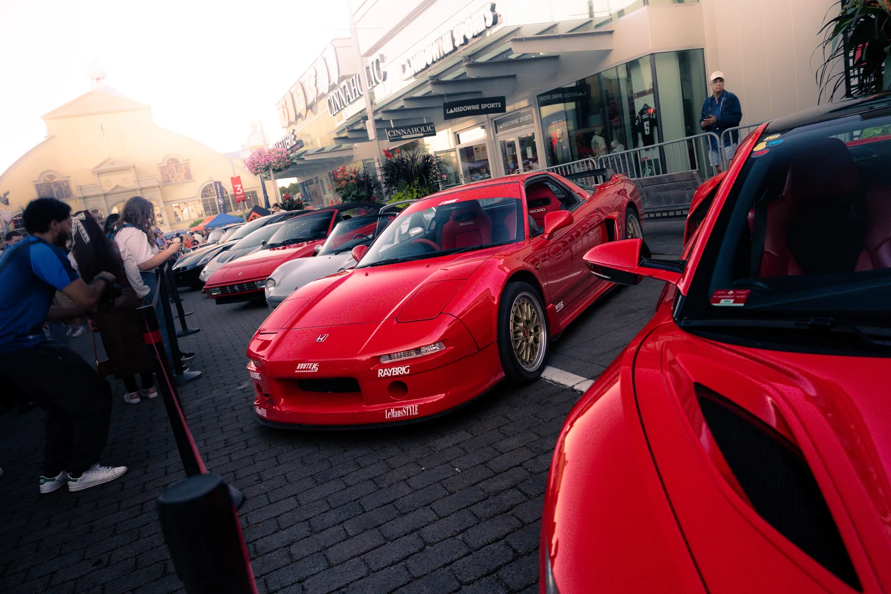
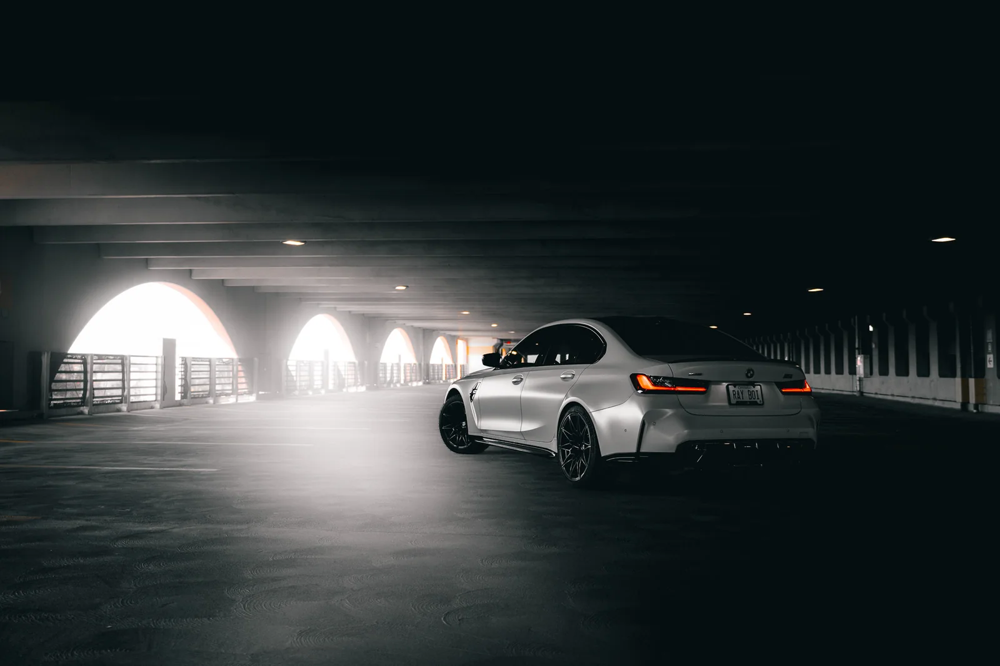
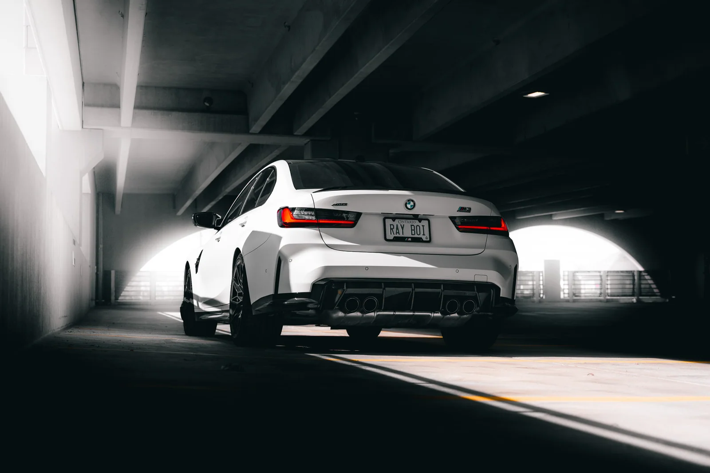
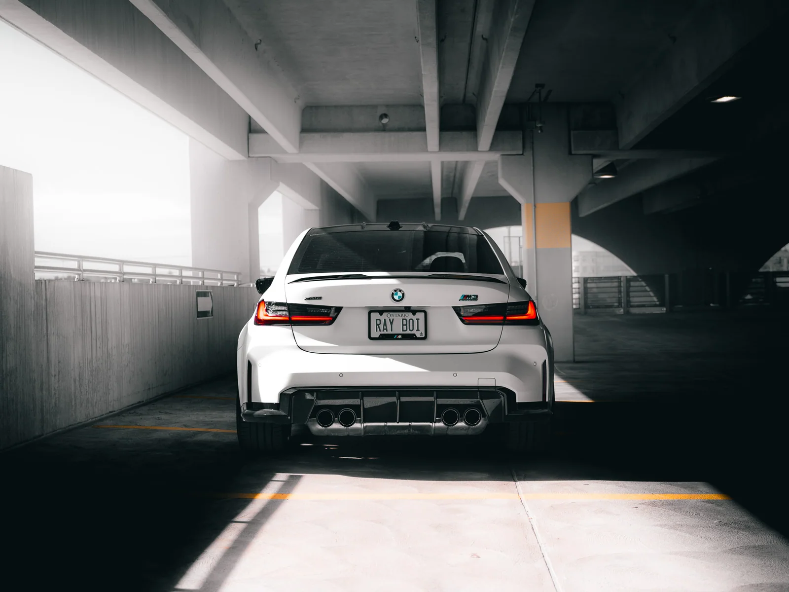
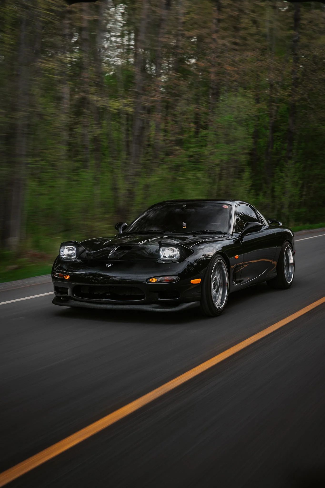
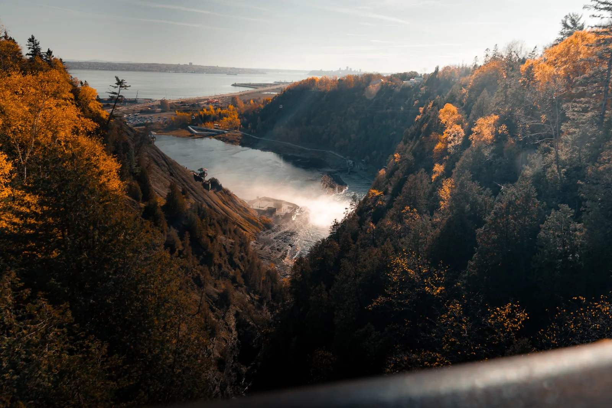

Event Coverage
Cars, crowds and everything happening between the main attractions.
- Car meets and automotive events
- Atmosphere and candid details
- A variety of vehicles and angles
- Edited photos for sharing
Custom quoteAsk about this
PHOTOGRAPHY / VIDEOGRAPHY · OTTAWA, ON
Automotive photography, events and places worth remembering. Capturing the moments that make everything feel a little more cinematic.
Explore my work
SELECTED WORK 001 / JS0PX
WHAT I DO
My work is about capturing the surroundings, motion and small details that make each shoot different.
WORK WITH JS0PX
From busy automotive events to a more personal photoshoot, each project is handled a little differently.

Cars, crowds and everything happening between the main attractions.

A dedicated session focused on one vehicle and your vision.

A more flexible approach to storytelling, events and media.
Prices depend on the shoot, location and what you need. Contact me for a quote.
BEYOND THE ROAD
Cars are a big part of what I shoot, but scenery, architecture and travelling are just as much a part of my work.

PEOPLE & PROJECTS
Some of the names and projects that have been part of my photography journey.
Recognition for automotive photography and opportunities to capture distinctive Porsche vehicles and events.
Documenting the cars, crowds and moments that make local automotive events worth remembering.
A private BMW M3 shoot exploring parking garage lighting, rolling shots and dramatic compositions.